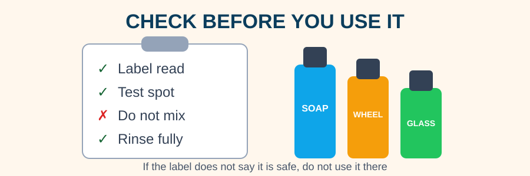

Before you use any product - the 8-point check
| Done | Check | What to confirm |
|---|---|---|
| ☐ | 1. Read the full label | Intended surfaces, dilution, contact time, and warnings |
| ☐ | 2. Identify your surface | Clear coat, matte paint, ceramic coating, wax, paint protection film, chrome, plastic, rubber, leather, fabric or glass |
| ☐ | 3. Check pH and type if stated | Acidic, alkaline or pH-neutral; strong cleaners need extra care |
| ☐ | 4. Check coating rules | Ceramic, wax or film makers may ban certain cleaners or require pH-neutral soap |
| ☐ | 5. Check temperature and sun | Do not apply strong products to hot panels or in direct sun unless the label allows it |
| ☐ | 6. Do a test spot | Hidden, small area first; wait, rinse and inspect before full use |
| ☐ | 7. Check tools | Clean mitt or towel suited to the surface; separate tools for wheels |
| ☐ | 8. Plan rinsing | Know how long the product can stay on, and rinse fully before it dries |
Stop rule: If the label does not say a surface is safe, if the test spot changes colour, texture or gloss, or if you feel unsure, do not use the product on that surface. Rinse the test spot, and choose a product made for that surface.
Compatibility matrix - general guidance only
Use this matrix as a starting point. A product label or coating maker can override it. Safe means generally used for that surface when the label allows it. Caution means test first and follow the label exactly. Avoid means do not use unless the label for that exact product says it is safe.
| Product type | Paint / clear coat | Ceramic coating | Matte paint / film | Glass | Leather | Fabric / carpet | Uncoated metal / chrome |
|---|---|---|---|---|---|---|---|
| pH-neutral car wash soap | Safe | Safe | Safe* | Safe | Avoid | Avoid | Safe |
| All-purpose cleaner, diluted | Caution | Caution | Avoid | Caution | Avoid | Caution | Caution |
| Strong alkaline cleaner / degreaser | Caution | Caution | Avoid | Caution | Avoid | Avoid | Caution |
| Acidic wheel cleaner | Avoid | Avoid | Avoid | Avoid | Avoid | Avoid | Caution |
| Wheel cleaner, pH-neutral | Caution | Caution | Avoid | Avoid | Avoid | Avoid | Safe* |
| Glass cleaner | Caution | Safe* | Avoid | Safe | Avoid | Avoid | Caution |
| Leather cleaner / conditioner | Avoid | Avoid | Avoid | Avoid | Safe* | Avoid | Avoid |
| Interior / fabric cleaner | Avoid | Avoid | Avoid | Avoid | Avoid | Safe* | Avoid |
| Spray wax / sealant | Safe* | Caution | Avoid | Avoid | Avoid | Avoid | Caution |
| Tyre dressing | Avoid | Avoid | Avoid | Avoid | Avoid | Avoid | Avoid |
* Safe only for products made for that surface, used as the label directs. For matte paint, avoid waxes and gloss-enhancing products unless they are made for matte finishes.
Surface-by-surface notes
| Surface | Prefer | Be careful with |
|---|---|---|
| Paint and clear coat | pH-neutral soap, soft mitt, thorough rinse | Strong cleaners left to dry, abrasive pads, dirty towels |
| Ceramic coating | pH-neutral soap made for coatings, as the coating maker directs | Strong alkaline or acidic cleaners, abrasive polishes |
| Matte paint and matte film | Products labelled for matte finishes | Wax, polish and gloss dressings that can add shine unevenly |
| Paint protection film | pH-neutral soap; follow film maker guidance | Solvents, strong cleaners and abrasive tools near film edges |
| Glass | Glass cleaner and a clean waffle or glass towel | Products that leave film, and cleaners on tinted film unless labelled safe |
| Leather | Leather cleaner and conditioner made for your leather type | All-purpose cleaners, strong solvents and excess water |
| Fabric and carpet | Fabric cleaner, soft brush, extraction or blotting and full drying | Soaking, harsh bleach-type products and heat that can set stains |
| Plastic and rubber trim | Trim cleaner or dressing made for that trim | Solvents and products that leave a greasy film on pedals or steering parts |
What never to mix
- Do not mix different cleaning chemicals together to make a stronger mix. Use one product at a time, as its label directs, and rinse between products.
- Do not mix bleach-based and ammonia-based cleaners, or any product the label says not to mix. Mixing can create harmful fumes.
- Do not add extra chemicals to a foam cannon bottle beyond what the soap label allows.
- Store products in their original labelled bottles, away from heat and children, and keep caps closed.
Test-spot method
- Choose a small, hidden area of the same surface, such as a lower door edge or inside a door jamb.
- Apply the product at the label dilution, for the label contact time.
- Rinse fully and dry. Inspect in good light for colour change, dullness, streaks, stickiness or texture change.
- Wait at least 15 minutes and check again. If anything looks wrong, do not use the product there.
- Record the result in the log below, so you do not repeat a failed test.
Product record log
| Product | Surface tested | Dilution / method | Test-spot result | Safe to use? | Date |
|---|---|---|---|---|---|
| Example: pH-neutral soap | Paint, ceramic coating | 1:10 in bucket | No change, rinsed clean | Yes | 2026-06-07 |
For more car care guides, see Car Care Guy at carcareguy.com.